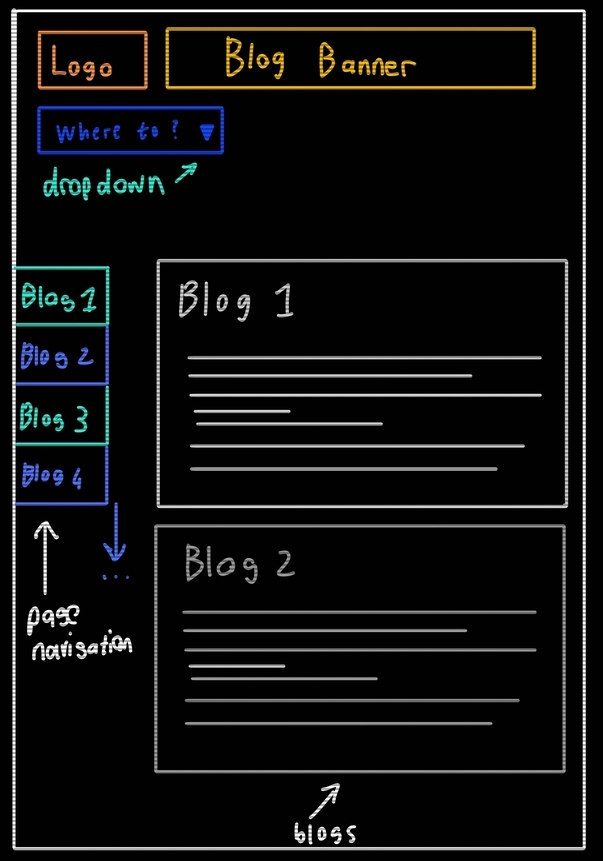
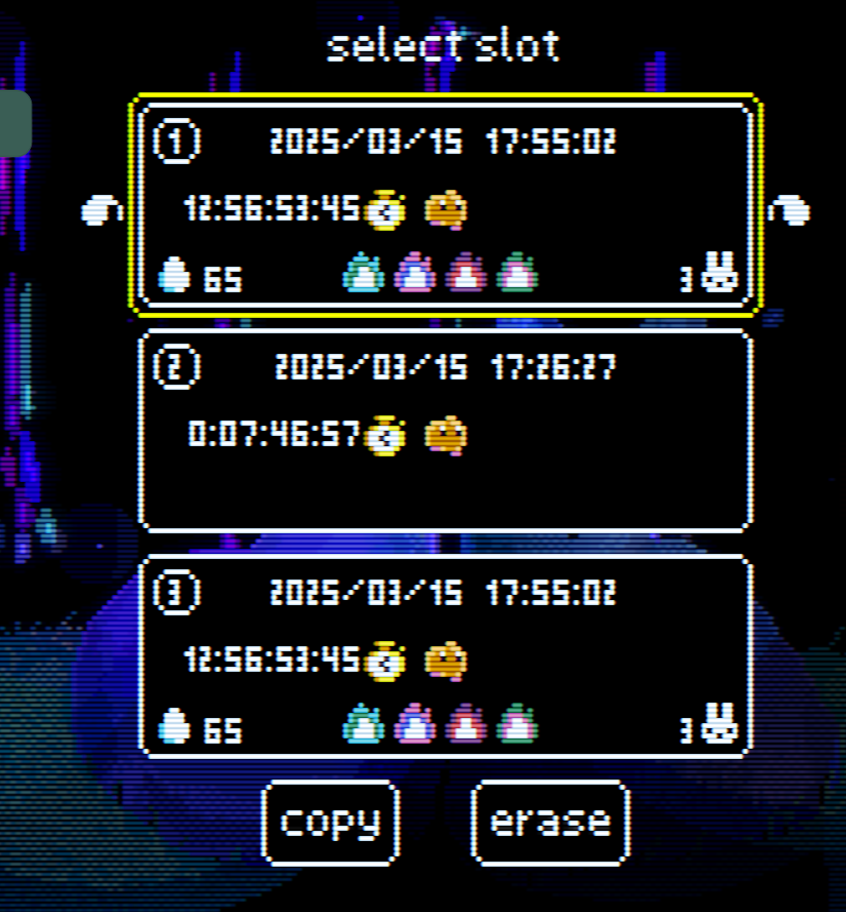
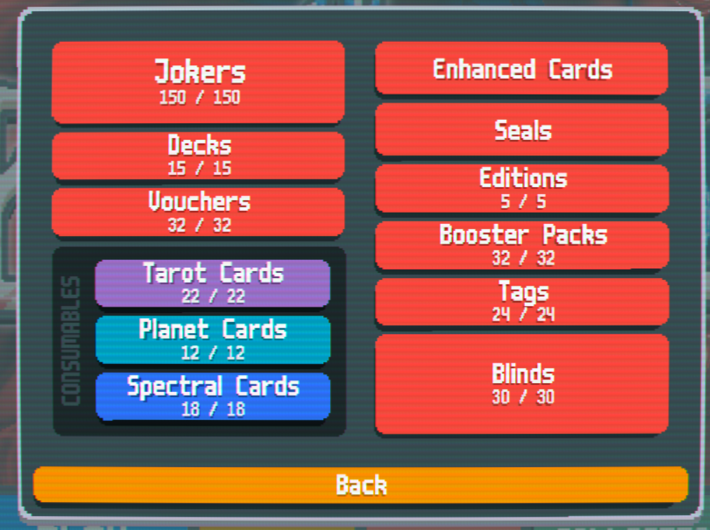
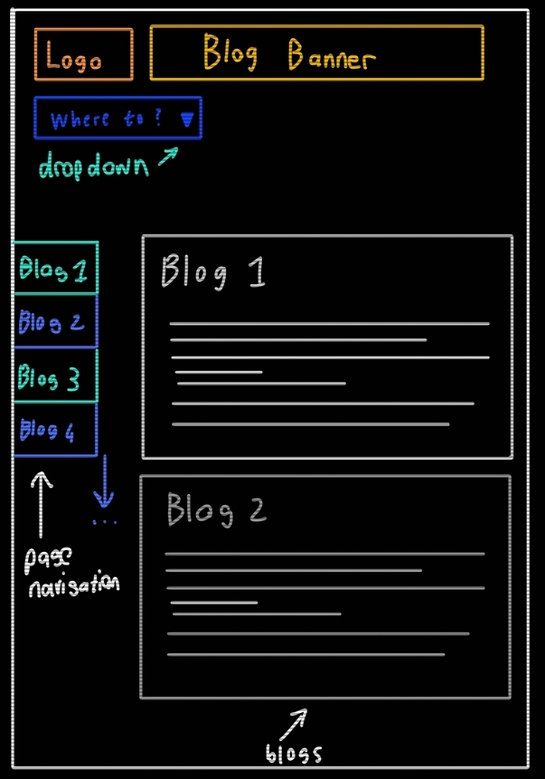
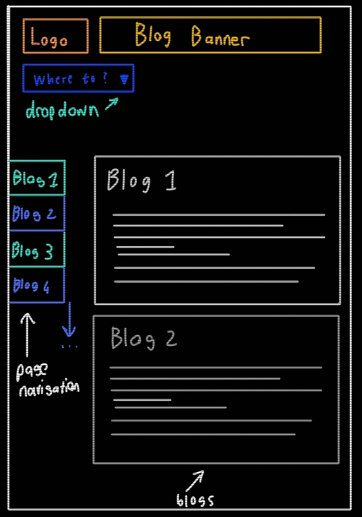

This wireframe was made before i had any prior knowledge of wireframing.
Additionally, I wasn't sure of the direction to take my website in. The
focus for this wireframe is the home page. I was focused on plainly
presenting the most important information, that being the header and
navigation to the other pages. Due to being the first wireframe, styling
was not considered. I also neglected to consider other layouts besides
desktop. Overall while this is a good starting point, more work needs to
be done to solidify the vision for this site.
Wireframe 1:
Wireframe 1: Improved version of first wireframe (Desktop and mobile layout)
These wireframes are simply cleaned up versions of the previous using a
wireframe site to improve its visual quality. As far as differences go,
I added another layout for mobile devices. I added a scroll bar on the
side for improved navigation. At this point I had an idea on the theme
for my website being styled after video games and their menus. For this
reason I added drop-down that opens the main navigation menu. Generally,
I still adhered to the idea of keeping navigation simple.
Wireframe 2: Cleaned up home page
This wireframe factored in the inclusion of a portfolio to my homepage, as well as being slightly clearer than the previous
wireframes. (improving is hard) As for a mobile layout, the navigation portion would be suitable, however the banners would be
resized. The portfolio currently only has images (that will act as links to my works) and no text.
If text is included, it would be beside each image on desktop and below on mobile.
This all lines up with the current goal of minimalistic menus and user-friendly navigation.
This was an early concept of what the navigation menu could look like. The
main inspiration was a video game menu, specifically an rpg menu.
This was the first idea to suit the theme of the website however, the more I worked on potential menus,
the more the menus ended up becoming cluttered and complicated.
I initially wanted to theme my site around video games as its one of my bigger hobbies and I'm interested in game design,
however this was not what I ended up going with as my website's theme.
Inspiration 1: Final Fantasy menu
This was the inspiration for the video game themed menu. What I liked was the font and the fact it related to video games.
What I didn't like was the layout, and how the information could look clustered. The colour scheme is very specific and I
was tunnel visioning on the idea. Overall while it was a start, the idea was too specific and making my own version would
likely look too similar to the source material.
Concept 2: Slightly improved navigation menu
This was a slightly improved menu for navigating.
A drop down expanded to a page selection. When an option was hovered over it became indented and a cursor appeared
to help with visual clarity and aid in user friendliness.
Additionally, when hovering over an option, some text would appear in the box to the right,
whether it be a preview of the contents or a description. I wasn't too happy with the idea.
A large block of text could clash with the simple, user friendly menus.
This navigation would be present on every page so it needed to align with my goal for the site.
The navigation section to the left was to navigate on the page. This was an example for the blogs page.
In this case each button would navigate to its corresponding position on the page.
This form of page navigation is still present, at least in concept.
The initial goal was to present my website with a video game theme,
however I felt I might be coming off too strong on that front.
My newer idea for the theme isn't as on the nose.
Current ideas:
The goal for my website used to be to showcase my connection to game development by theming my site around video games.
My current idea is to use a neon aesthetic with scanlines. (CRT filter)
This way i could use a more minimalistic menu which would be easier to construct for me and eaier to navigate for users.
This idea also wouldn't be as restrictive to work with and would allow a more subtle theme. The goal for this theme would be to
provide a user friendly experience that focuses on intuitive navigation with bright distinct visuals.
This wouldn't convey my connection to game development but I would leave that part to my profile and portfolio.
The visuals would simply be a way to present a minimalistic style in an aesthetic that I'm fond of.
Navigation is important as the users of my site are poeple who either want to know more about me or my works.
Providing an user-friendly experience is very important. People need to know how to access all the necessary information.
With a focus on simple box-like menus, the navigation would focus on clarity with the neon visuals adding some flair
without distracting the user. (hopefully)
Sketches:

Design 1: Neon styled design for home and blog page respectivly
These are the inital sketches for how my sites first two pages would look. As per the goal above, the focus is on minimalistic
box-like menus. For the homepage underneath the banner (maybe a logo too) is the navigation dropdown, revealing the buttons
for each pages navigation. Below that is the portfolio. My current idea is to diplay the game development projects I've done,
with a way to navigate to that project's Itch/Git page. This would be the first thing users see, that way they immediatly know
what I do. If they want more information then they would navigate to my profile.
For the blog page, the same dropdown menu (shown as collapsed) would be present. (aswell as on every other page)
The blocks on the left side of the page would be used to navigate to an individual blog on the page.
This would be visible anywhere on the page so that users can quickly navigate to their desired point on the page.
The blogs themself would take up the remainder of the page.
They would be written in grey/white as opposed to neon to improve readability.
The blogs are large chunks of text and improving their readability is top priority.
The neon buttons are used on a black background to make them stand out and clearly visible.
The buttons are coloured in blues while other UI elements are marked on orange.
This is to indicate what can be interacted with in order to prevent confusion and provide clarity.
Although hard to see, scanlines are applied to these sketches to get an idea for the final product.
The screen-like visuals can be a subtle way to reference my interests without being too direct.
Inspirations:

Inspiration 2: Animal Well file select screenInspiration 3: Inscryption options menu

Inspiration 4: Balatro collection menu
As with my first ideas, these are from video game menus. However, unlike before, these menus are less cluttered.
As for what parts inspired me, with Inscryption being the exception, they are brightly coloured, they use a minimalistic
box-like structure, and all 3 employ the scanlines. All 3 are visual styles I am very fond of,
my idea is to use their similarites as the basis of my style while emphasizing the bright colours aspect.
For the first practice for style guides, we were split into teams to
design a style guide for a specific kind of website. The prescribed site
was a South African skincare website with a focus on natural indigenous
ingredients.
DESIGN GOAL:
Our website will showcase a minimalistic, clean aesthetic that
prioritizes a user-friendly and engaging experience, that is easily
navigatable. The website will display the products, through reflecting
the richness of South Africa's landscape.
DEFINING VISUAL AESTHETIC:
Our website will exhibit a minimalistic aesthetic, showcasing Blossom
Beauty's products, in a manner that is appeasing and easy to the eye.
The focus of the website is to emphasize the organic ingredients of the
products, which will attract our target audience. Our minimalistic
colour palate will create an emphasis on the products to encapsulate
their natural origin. These colours will be seen throughout the page, to
create consistency, which will not overwhelm the user with change of
colour aesthetic.
COLOUR SCHEME:
Test style guide colours
The website contains a neutral background which will emphasise the text
and products, as there will be a contrast between the light background
and dark text. With the use of different colours for boarders and
headings, leads the viewers eyes through the website, without
distracting them.


 
